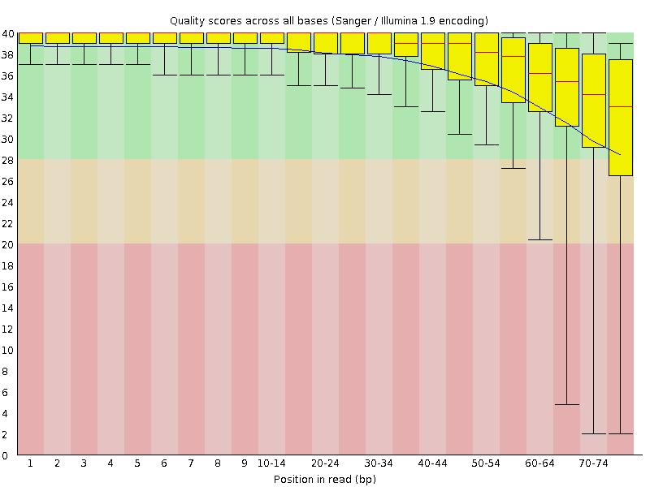
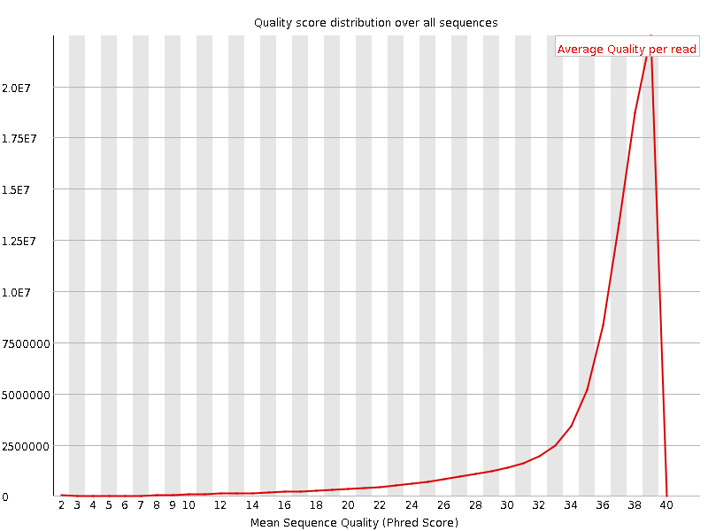
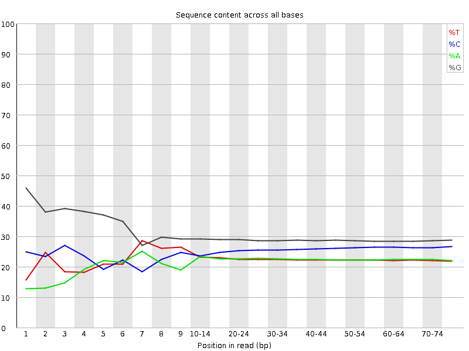
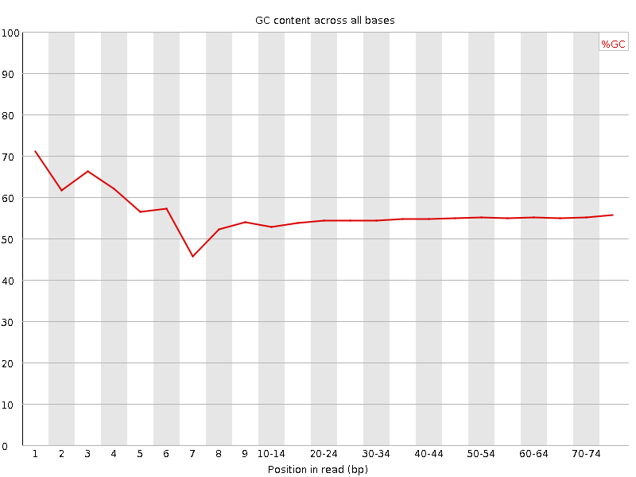
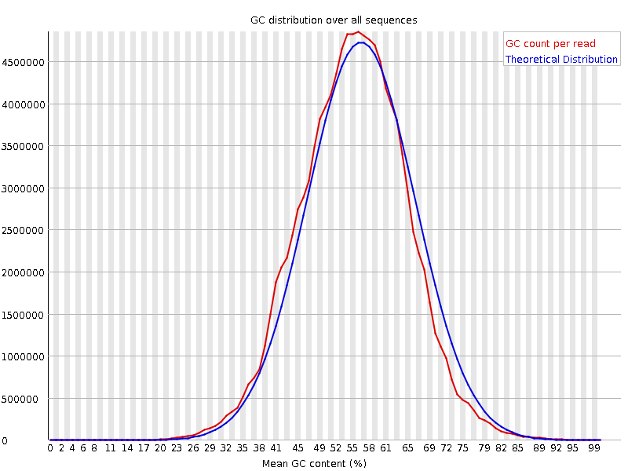
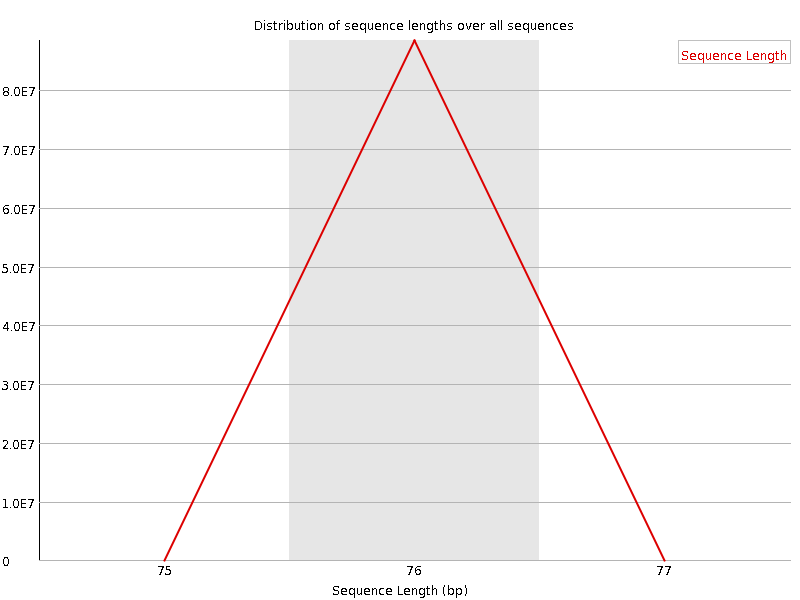
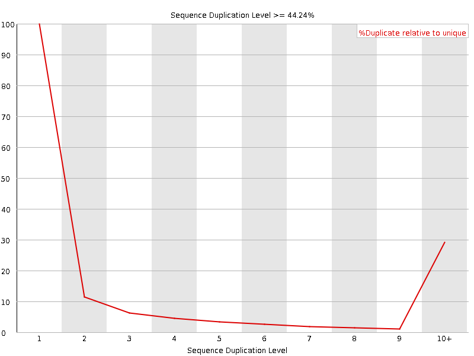
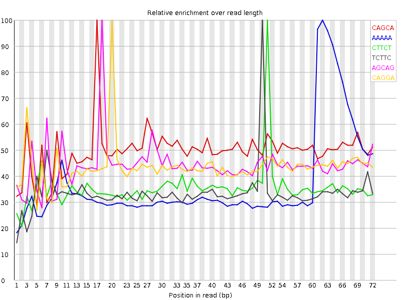

![[OK]](Icons/tick.png) Basic Statistics
Basic Statistics
| Measure | Value |
|---|---|
| Filename | SRR387662_1.fastq |
| File type | Conventional base calls |
| Encoding | Sanger / Illumina 1.9 |
| Total Sequences | 88445339 |
| Filtered Sequences | 0 |
| Sequence length | 76 |
| %GC | 55 |
Per base sequence quality

Per sequence quality scores

![[FAIL]](Icons/error.png) Per base sequence content
Per base sequence content

Per base GC content

Per sequence GC content

Per base N content

Sequence Length Distribution

![[WARN]](Icons/warning.png) Sequence Duplication Levels
Sequence Duplication Levels

Overrepresented sequences
| Sequence | Count | Percentage | Possible Source |
|---|---|---|---|
| GATCGGAAGAGCGGTTCAGCAGGAATGCCGAGACCGATATCGTATGCCGT | 196049 | 0.2216612002583878 | Illumina Paired End PCR Primer 2 (98% over 50bp) |
Kmer Content

| Sequence | Count | Obs/Exp Overall | Obs/Exp Max | Max Obs/Exp Position |
|---|---|---|---|---|
| CAGCA | 20772325 | 3.4072387 | 6.815679 | 17 |
| AAAAA | 10901875 | 3.1450787 | 8.488914 | 62 |
| CTTCT | 13027185 | 2.7420087 | 7.7320504 | 51 |
| TCTTC | 11659050 | 2.4540389 | 7.2959757 | 50 |
| AGCAG | 17251785 | 2.43883 | 5.4945517 | 18 |
| CAGGA | 16628160 | 2.3506699 | 5.3785996 | 20 |
| CTGCT | 14614680 | 2.337318 | 5.843835 | 54 |
| GGCAG | 19380480 | 2.0555482 | 6.5416737 | 1 |
| TCAGC | 12329390 | 1.996938 | 5.5505643 | 16 |
| CTGGG | 18814265 | 1.9704068 | 5.0235624 | 1 |
| TTCTG | 10486795 | 1.9023527 | 5.668058 | 52 |
| CTTGA | 10312355 | 1.894526 | 6.147506 | 57 |
| GGAAG | 15544540 | 1.8938923 | 5.6841955 | 5 |
| AGGAA | 11462830 | 1.8614595 | 5.7115316 | 21 |
| GAAGA | 10619065 | 1.7244399 | 6.353931 | 6 |
| TTCAG | 9221345 | 1.694092 | 5.7718396 | 15 |
| TCTGC | 10529000 | 1.6838974 | 5.159283 | 53 |
| TGCTT | 7615890 | 1.3815573 | 5.183804 | 55 |
| TTGAA | 6489220 | 1.3694605 | 5.895876 | 58 |
| GAAAA | 6189940 | 1.3397769 | 5.452026 | 60 |
| GTCTT | 7385245 | 1.3397173 | 5.4956417 | 49 |
| GTTCA | 7229130 | 1.3280938 | 5.3327756 | 14 |
| GGGGA | 14158295 | 1.294208 | 5.9866853 | 1 |
| GGGGG | 18813895 | 1.2902906 | 5.5739083 | 1 |
| AAGAG | 7892580 | 1.2816834 | 5.8151293 | 7 |
| TGAAA | 5955990 | 1.2729328 | 5.473094 | 59 |
| GTGGG | 13774475 | 1.2432935 | 6.2882776 | 1 |
| AATGC | 4982310 | 0.9269749 | 5.072611 | 24 |
| CGGGG | 11187430 | 0.89024425 | 5.1970963 | 1 |